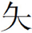
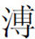
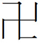
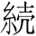
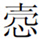
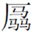
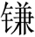

世界裸体美術全集（一）一本 六·○○ 一月六日
世界地理風俗大系（一至三）三本 一五·○○ 一月九日
Andron Neputevii一本 靖华寄来 一月十一日
世界古代文化史一本 一七·○○ 一月十二日
園芸植物図譜（一）一本 四·○○
铜板苏格拉第像一枚 诗荃寄来
マルチンの犯罪一本 二·二○ 一月十三日
Book-Illustration in B.and A.一本 七·○○ 一月十八日
中国史话四本 二·○○ 一月十九日
司马迁年谱一本 ○·五○
班固年谱一本 ○·三○
两周金文辞大系一本 八·○○ 一月二十二日
世界美術全集（别册二）一本 二·八○ 一月二十六日
世界地理風俗大系（别册二及三）二本 一○·○○七四·八○○
陈老莲博古酒牌一本 ○·七○ 二月十日
翻汪本阮嗣宗集一本 一·六○ 二月十六日
绵州造象记六枚 六·○○
鄱阳王刻石拓片一枚 一·五○
天监井阑题字拓片一枚 一·○○
湘中纪行诗拓片一枚 ○·三○
樊谏议集七家注二本 一·六○ 二月十九日
王子安集注六本 四·○○ 二月二十日
温飞卿集笺注二本 二·○○
安阳发掘报告（一及二）二本 三·○○ 二月二十六日二一·○○○
程荣本阮嗣宗集二本 三·○○ [三月一日]
唐小虎造象拓片一枚 一·○○ 〖三月一日〗
汪士贤本阮嗣宗集二本 二·○○ 三月四日
商周金文拾遗一本 一·○○
九州释名一本 一·○○

彝考释质疑一本 ○·八○四洪年谱四本 二·○○ 三月八日
古籀馀论二本 一·二○
陈森梅花梦二本 ○·八○
王子安集佚文一本 一·○○ 三月十七日
函青阁金石记二本 一·六○
書道全集（二十三）一本 二·六○ 三月二十七日
世界芸術窎達史一本 四·○○ 三月三十日
颐志斋四谱一本 ○·六○
亿年堂金石记一本 ○·七○ 二四·三○○
影印萧云从离骚图二本 四·○○ 四月三日
影印耕织图诗一本 一·五○
影印凌烟阁功臣图一本 二·○○
吹网录鸥陂渔话四本 四·○○
疑年录汇编八本 七·五○
张

本阮步兵集一本 一·二○龟甲兽骨文字二本 二·五○ 四月四日
冯浩注玉谿生诗文集十二本 一二·○○
乡言解颐四本 一·○○
原色貝類図一本 二·四○ 四月十五日
人生漫畫帖一本 二·四○ 四月二十四日
ノアノア（岩波文庫本）一本 ○·五○ 四月二十八日
古東多

（四月号）一本 山本夫人赠 四月三十日四一·○○○国际的门塞维克主义之面貌一本 靖华寄来 五月一日
版画自修书一本 同上
友達一本 二·五○ 五月二日
世界美術全集（别册十一）一本 三·二○ 五月四日
世界美術全集（又十四）一本 三·二○
古東多（第一年二至三）二本 二·五○ 五月六日
古東多（第二年一至三）三本 三·九○
近代支那の学芸一本 六·八○
唐宋元明名畫大観二本 高良女士寄赠 五月十七日
書道全集（二十五）一本 二·四○ 五月十九日
書道全集（二及九）二本 四·八○ 五月二十日
石濤（ 雪作）一本 三·二○ 五月二十二日
雪作）一本 三·二○ 五月二十二日
建設期のソヴエート文学一本 一·八○ 五月二十六日
史底唯物論一本 一·七○
古東多（五）一本 山本夫人寄赠 五月三十日
文学の連

性一本 ○·五○ 五月三十一日三七·五○○支那文学史綱要一本 一·○○ 六月三日
G.Vereisky石版文学家像一本 靖华寄来 六月三日
A.Ostraoomova画集一本 同上
P.Pavlinov木刻画一幅 同上
A.Gontcharov木刻画十六幅 同上
Wirinea一本 四·二○ 六月四日
世界地理風俗大系六本 三一·○○
J.Millet画集一本 靖华寄来 六月七日
Th.A.Steinlen画集一本 同上
G.Grosz画集一本 同上
I.N.Pavlov画集一本 同上
A.Kravtchenko木刻一幅 同上
N.Piskarev木刻十三幅 同上
V.Favorski木刻六幅 同上
I.PavIov木刻自修书一本 同上
世界地理風俗大系（二十一）一本 五·○○ 六月十日
世界地理風俗大系（别卷）一本 五·○○
建設期のソヴエート文学一本 二·○○ 六月十四日
歷史学批判叙説一本 二·二○
喜多川歌 一本附图一幅 九·八○
一本附图一幅 九·八○
王忠

公遗集（第一集）十六本 静农寄赠 六月十八日世界地理風俗大系（别卷）一本 五·○○ 六月二十二日
川柳漫畫全集（七）一本 二·○○
欧米に于ケる支那古鏡一本 一三·○○ 六月二十三日
鹿の水かがみ一本 二·○○
小杉放庵畫集一本 五·五○ 六月二十六日
プロと文化の問题一本 一·五○ 六月二十九日
民族文化の窎展一本 一·三○
東洲 写楽一本 七·七○ 六月三十日九八·○○
写楽一本 七·七○ 六月三十日九八·○○
古燕半瓦二十种拓片四枚 静农寄赠 七月十一日
詭弁の研究一本 一·五○ 七月二十一日
セザンヌ大畫集（1）一本 七·五○ 七月二十八日九·○○○
李龙眠九歌图册一本 一·一○ 八月二日
仇文合作飞燕外传一本 一·五○
仇文合作西厢会真记图二本 三·○○
沈石田灵隐山图卷一本 一·一○
释石涛东坡时序诗意一本 一·○○
石涛山水册一本 ○·六○
石涛和尚八大山人山水合册一本 ○·七○
黄尊古名山写真册一本 ○·六○
梅癯山黄山胜迹图册一本 一·四○
地理風俗大系十五本 五三·○○ 八月四日
芸術学研究（第一辑）一本 一·五○ 八月六日
金文丛考一函四本 一二·○○ 八月八日
支那住宅誌一本 六·○○ 八月九日
石印筠清馆法帖六本 一·五○ 八月十一日
明清名人尺牍一至三集十八本 二·七○
石印景宋本陶渊明集一本 ○·二○
文始二部二本 ○·六○
支那古明器図鑑（一）一帖 七·○○ 八月十六日
支那古明器図鑑（二）一帖 七·○○
鳥居清長一本 七·○○ 八月十七日
 書放浪一本 四·○○ 八月十九日
書放浪一本 四·○○ 八月十九日
支那古明器図鑑（三）一帖 六·五○ 八月二十二日
書道全集（二十四）一本 二·五○
ロシヤ文学思潮一本 二·五○ 八月二十三日
Die Malerei im 19 Jahrhundert二本 诗荃赠 八月三十日
Die Kunst der Gegenwart一本 同上
Der Kubismus一本 同上
Der Fall Maurizius一本 冯至赠一二五·○○○
世界宝玉童話叢書三本 四·○○ 九月二日
セザンヌ大畫集（3）一本 六·二○ 九月八日
M.Gorky画象一本 靖华寄来 九月九日
古東多（别册）一本 山本夫人寄赠 九月十日
PAUL JOUVE一本 一五·○○ 九月十一日
TOUCHET一本 一三·○○
俄译一千一夜（一——三）三本 三○·○○ 九月十二日
托尔斯泰小话一本 二·○○
EPIMOV漫画集一本 六·○○
生物学講座補編（一）二本 一·○○ 九月十三日
生物学講座補編（二）二本 一·○○
The Concise Univ.Encyc.一本 一四·五○ 九月十五日
東方学報（东京）二本 六·四○ 九月二十二日
東方学報（京都）二本 六·四○
六书解例一本 ○·五○ 九月二十四日
说文匡鄦一本 ○·七○
九品中正与六朝门阀一本 ○·四○
稷下派之研究一本 ○·二五○
魏晋南北朝通史一本 六·二五○ 九月二十七日
園芸植物図譜（四）一本 三·六○ 九月三十日
愛書狂の話一本 一·二○
紙魚繁昌記一本 二·五○ 一二○·九○○
植物の驚异一本 二·○○ 十月四日
動物の驚异一本 二·○○
昆虫の驚异一本 二·○○
顥微鏡下の驚异一本 二·○○
動物の驚异一本 二·○○ 十月五日
セザンヌ大畫集（2）一本 七·○○ 十月九日
斗南存稿一本 内山君赠 十月十一日
書物の敵一本 二·○○ 十月十四日
書道全集（廿五）一本 二·六○ 十月十八日
書道全集（廿六）一本 二·六○

氏编钟图释一本 二·七○ 十月十九日秦汉金文录五本 一○·八○
安阳发掘报告（三）一本 一·五○
敦煌劫馀录六本 三·六○
现代散文家批评集二本 八·○○ 十月二十四日
文学的遺産（一至三）三本 一六·○○ 十月二十五日
文艺家漫画象一本 六·○○
葛飾北一本 七·○○
殷周铜器铭文研究二本 五·○○ 十月二十七日
插图本中国文学史（二）一本 豫付五元 十月三十一日
周作人散文钞一本 ○·五○
看云集一本 一·○○ 九○·○○○
淶鉄支那月誌三本 一·八○ 十一月三日
支那古明器泥象図鑑（四）一帖 六·○○ 十一月六日
大晋盛德隆熙之碑并阴拓本二枚 幼渔赠 十一月十九日
清代文字狱档六本 兼士赠 十一月二十二日
考古学论丛（一）一本 同上 十一月二十六日
版芸術（一至七）七本 四·○○ 十一月三十日
鲁迅全集（日译）二本 五·○○ 一六·八○○
金文馀释之馀一本 三·○○ 十二月三日
Marc Chagall一本 五·六○ 十二月八日
鈴木春信一本 五·六○ 十二月九日
版芸術（九）一本 ○·六○ 十二月十三日
大東京百景版畫集一本 山本夫人赠 十二月十九日
木刻小品八种八枚 陈耀唐赠
動物図鑑一本 二·○○ 十二月二十日
東方学報（东京之三）一本 四·二○ 十二月二十二日
版芸術（八）一本 ○·六○
文学思想研究（一）一本 二·五○ 十二月二十四日
中世欧洲文学史一本 三·○○ 十二月二十六日
版芸術（十）一本 ○·六○ 十二月二十八[九]日
籀经堂钟鼎文考释一本 一·○○ 十二月三十日
有万熹斋石刻跋一本 ○·八○
苏斋题跋三本 三·○○ 三二·五○○
本年共用书泉六百九十三元九角，
平匀每月用书泉五十七元八角一分。
[1] 《城市之光》 原名《City Lights》，卓别林编、导、主演的故事片，美国联美影片公司1931年出品。
[2] 《蛮女恨》 原名《Aloha》，故事片，美国铁斐纳影片公司1930年出品。
[4] 篠崎医院 1900年日本人篠崎都香佐在上海创设的医院，原在熙华德路（今余杭路）十一号，1910年迁蓬路（今塘沽路）六十八号。1923年转让与副院长秋田康世。
[5] 即《无题》（“血沃中原肥劲草”）。后收入《集外集拾遗》。
[6] 指一·二八事变发生前的动乱。是晚驻沪日军进攻闸北，其时鲁迅住在拉摩斯公寓，面对日本海军陆战队司令部，受到战火的威胁。
[7] 指一·二八事变中的避难。鲁迅因居所临近战区，初避居内山书店三楼；2月6日迁至四川路福州路附近内山书店中央支店；3月13日因海婴出疹子移入福建路牛庄路口大江南饭店；3月14日曾回寓一次；19日迁返原寓。
[9] 指为营救许钦文事。许钦文因借住他家的陶思瑾（陶元庆之妹）杀害同室居住的刘梦莹案受牵连，于2月11日被拘押。鲁迅函托在司法界任职的陶书臣设法营救，3月19日许被交保释放。
[10] 付内山书店员泉四十五 内山完造在一·二八战事中回国避居，代理经理

田寿亦因护送其子骨灰返日，遂由鲁迅垫付内山书店中央支店店员的工资。[11] 访子英 许寿裳因对鲁迅在一·二八战事中的安危感到不安，曾致电在沪的陈子英探询鲁迅下落，陈子英为此登报找寻，鲁迅悉情后往访。
[12] 史女士及金君来 史沫特莱等来访，为商讨营救牛兰夫妇事。
[13] 为颂棣书长吉七绝一幅 即唐代李贺《南园十三首》之七。文为：“长卿牢落悲空舍，曼倩诙谐取自容。见买若耶溪水剑，明朝归去事猿公。录长吉诗为 颂棣先生雅属 鲁迅”。
[16] 平君文稿 即林克多（原名李平）的《苏联闻见录》原稿。
[17] べヵリ 为英语Bakery的日语音译，意为面包房。
[18] 收霁野还泉百元 1927年1月鲁迅在厦门时，李霁野为出版《黑假面人》及在燕京大学求学，曾向鲁迅借资百元。上海发生一·二八事变后，李霁野担心鲁迅北京眷属生活困难，遂还此款。
[19] 复内山君信 内山完造在一·二八事变时回国避居，与增田涉等商请鲁迅到日本九州大学任教，鲁迅回信谢绝。
[20] 编杂感集 鲁迅整理1928年至1931年间杂文稿，拟编为《三闲集》和《二心集》。
[21] 即《林克多〈苏联闻见录〉序》。后收入《南腔北调集》。
[22] 未名社帐目 未名社结束后，韦丛芜承诺清还所欠鲁迅三千余元、曹靖华一千余元、李霁野八百余元。李霁野所寄即此帐目。参见本卷第324页注〔3〕。
[23] 鲁迅在上海购买宣纸等，又托在日本的内山完造代购日本纸，俱用以寄请曹靖华转致苏联版画家以换取他们的作品。两年后从所得作品中选出六十幅，精印为《引玉集》。
[24] 《铁流》、《毁灭》系鲁迅以“三闲书屋”名义自费印行，因当时受一·二八战事影响，故将所存之书半价售与光华书局，以收回一些成本。
[25] 为促使德国版画展览会的举行，鲁迅特置镜框一批，本日借与汉堡嘉夫人供展览用。
[27] 平和洋行 日本人米田登代子及其丈夫在上海北四川路底开设的钓具、玩具商店。
[29] 三弟往安徽大学教授生物学 一·二八战事中，商务印书馆编译所、工厂等被毁，该馆宣布职工一律解聘。周建人经鲁迅托人介绍，往安徽大学任教。后经蔡元培洽商，于8月仍回商务印书馆任职。安徽大学，1927年成立于安庆。
[30] 《英雄们》 即《革命的英雄》。短篇小说，苏联孚尔玛诺夫（通译富曼诺夫）著，鲁迅译文后收入《一天的工作》。
[32] 当时增田涉为编译《世界幽默全集》中的中国部分函商鲁迅。鲁迅为之选寄《水浒传》等小说八种，并指明这些小说中可译的有关章节。
[33] 德国版画展览会 由上海瀛寰图书公司德籍经理伊蕾娜（Irene）主办，当时侨居上海的德国汉堡嘉夫人出面筹办。原定1931年12月7日开幕，因置备大镜框费时，延期至次年6月始展出。展品有珂勒惠支、梅斐尔德、格罗斯等人作品百余幅。鲁迅曾为之写《介绍德国作家版画展》、《德国作家版画展延期举行真像》等文，并借与镜框及珍藏的名画。
[34] 指许钦文从有关报纸上剪下证明自己与陶（思瑾）刘（梦莹）案件无关的材料。
[37] 以《铁流》版售与光华书局 当时有人在北平盗印《铁流》，纸质劣而错讹多，故鲁迅将该书纸型售与上海光华书局印行普及本，以作抵制。
[38] 春地美术研究所 1932年5月成立，由原一八艺社部分成员及其他左翼美术工作者组成。6月17日起该所在八仙桥基督教青年会举办展览会，展出中国木刻百余幅及鲁迅等提供的德国木刻数十幅。展览会结束后不久该所即遭国民党当局破坏。
[39] 信札抄本 即鲁迅致台静农等人信札的抄本。当时冯雪峰拟编印多人的书信集，曾向鲁迅索取其1927年9月25日致台静农信。因鲁迅未留底稿，故请李霁野择要抄寄。
[40] 日文《铁流》 鲁迅将自己珍藏的日译本《铁流》（藏原惟人译）寄曹靖华，托赠该书作者绥拉菲摩维支。
[43] 即《无题》。后录入《南腔北调集·为了忘却的记念》。
[44] 集古书画金石展览会 全称“集古书画碑帖古玩展览会”。无锡旅沪同乡会举办。7月9日至15日在七浦路该会展出，展品达千余种。
[47] 《星花》译稿及印本 《星花》，短篇小说，苏联拉甫列涅夫著，曹靖华译，后由鲁迅编入《竖琴》。印本，指先在苏联出版的《星花》中译本。
[48] 往蔡先生寓 一·二八战事后，周建人被商务印书馆解雇，鲁迅曾函托许寿裳转请蔡元培推荐返馆工作。事成，鲁迅偕周建人往蔡寓取聘约并致谢。
[49] 至开明书店问未名社事 8月12日鲁迅收未名社信中附有《未名社账目结束清单》一分，其中说明积欠鲁迅的三千多元将由该社在开明书店的存款中支付。本日鲁迅往询该店应代未名社付款的数额，未得结果，至17日该店杜海生来信始作明确答复。
[50] 将《二心集》稿售去 《二心集》于4月编成后，不久即交北新书局，但该局不愿接受出版。后经阿英介绍给合众书店出版，并售与版权。
[51] 野风社 左翼青年木刻家团体，主要成员有陈卓坤、顾鸿干、野夫、陈学书、吴似鸿、郑邵勤、倪焕之等。1932年8月成立，设在虹口西江湾路公园坊24号。鲁迅多次前往该社演讲并曾捐款资助该社。
[52] 即《苏联文学理论及文学批评的现状》。论文，日本上田进作，鲁迅译文发表于《文化月报》第一卷第一期（1932年11月），后收入《译丛补》。
[55] 诗荃来自柏林 徐诗荃因母病危，自柏林回国往长沙探亲，经上海时往访鲁迅。鲁迅此后在9月8日及10月6日所得徐诗荃信，均为徐在回国前所发。
[56] 指访瞿秋白夫妇。当时他们寓于南市紫霞路六十八号冯雪峰友人谢澹如家中。
[58] 即《枯煤，人们和耐火砖》。苏联班菲洛夫著，译文后收入《一天的工作》。
[59] 文尹小说稿 指杨之华译的绥拉菲摩维支作《一天的工作》和《岔道夫》，后均由鲁迅收入《一天的工作》。
[60] 往文华别庄看屋 因拉摩斯公寓正房朝北，不宜于海婴健康，本日起鲁迅另觅新居，次年3月21日看定大陆新村九号寓。文华别庄，应作“文华别墅”，在施高塔路（今山阴路）大陆新村迤北。
[61] 良友公司 即良友图书印刷公司。1926年1月创办，设在北四川路八五一号。总经理为伍联德，编辑先后有梁得所、郑伯奇、马国亮、赵家璧等。曾出版鲁迅编译的《竖琴》、《一天的工作》及鲁迅编选的《中国新文学大系·小说二集》、《苏联版画集》等。
[62] 大陆新村 在施高塔路（今山阴路）近北四川路。由大陆银行投资建造，1932年春建成，共六栋六十户。鲁迅后于次年4月11日迁居于此。参见本卷第374页注〔7〕。
[63] 达夫、映霞招饮 郁达夫因其长兄郁华自北平调任江苏省高等法院上海刑庭庭长，设宴招待，请鲁迅、柳亚子等作陪。
[65] 历史语言研究所 国立中央研究院所属研究所之一。1927年11月成立于北京，所长傅斯年。
[66] 往野风画会 讲《美术上的大众化与旧形式利用问题》，讲稿佚。
[67] 登沪宁车 鲁迅赴北平探母病。在平期间作演讲五次，是为“北平五讲”。
[68] 往北京大学第二院演讲 题为《帮忙文学与帮闲文学》，后收入《集外集拾遗》。
[69] 往辅仁大学演讲 辅仁大学，美国公教本笃会在华创办的学校。1925年在北平设立“公教大学”，1927年改为现名。1933年由美国圣公会接办。本日鲁迅讲题为《今春的两种感想》，后收入《集外集拾遗》。
[70] 指清华大学。其前身为游美学务处附设之肄业馆，1911年易名清华学校，1925年改为清华大学。
[71] 往女子文理学院讲演 女子文理学院，前身为女师大。本日鲁迅往讲《革命文学与遵命文学》，讲稿佚。
[74] 台静农来请鲁迅往其寓参加北平各左翼社团欢迎会，鲁迅在会上讲了话。
[75] 往师范大学讲演 讲题为《再论“第三种人”》，讲稿佚。
[76] 往中国大学讲演 讲题为《文学与武力》（一作《文艺与武力》），讲稿佚。
[77] 即《鲁迅自选集》。下文的“序”，题作《〈自选集〉自序》，收入《南腔北调集》。
[78] 万两 日语。即硃砂根，又名平地木。一种药用及观赏植物。
[79] 增田君信并质疑 增田涉当时在翻译鲁迅《中国小说史略》，并为佐藤春夫主编的《世界幽默全集》翻译《阿Q正传》等作品，遇有疑难问题即向鲁迅函询，鲁迅答问的信件有八十余通，现编为《答增田涉问信件集编》，收入本全集第十四卷。
[80] 往野风社闲话 是日鲁迅由叶以群陪同，往野风社做关于艺术创作等问题的谈话。
[81] 箑 即扇。此处指扇面。鲁迅为书《自嘲》，其中“冷对”写作“冷看”。
[82] 得维宁信 瞿秋白（维宁）夫妇因遭国民党特务注意，11月下旬到鲁迅家中暂住。本月下旬又移居他处。此信为瞿秋白夫妇到达新居后的来信。
[83] 瞿秋白赠诗并跋为：“不向刀丛向舞楼，摩登风气遍神州。旧书摊畔新名士，正为西门说自由。近读《申报·自由谈》，见有人说真正快乐的情死，却是《金瓶梅》里的西门庆。此外尚有‘冷摊负手对残书’之类的情调，实在‘可敬’，欧化白话文艺占领《自由谈》，正像国民革命军进北京城。欲知后事如何，只要看前回分解可也。因此打油一首。”
[84] 即《教授杂咏》（一）及（二）。后均收入《集外集拾遗》。
[85] 郁达夫是日来访，告诉鲁迅，《自由谈》编辑已易为刚从法国回来的黎烈文，希望鲁迅等进步作家写稿。次年初，鲁迅即为该刊撰文，开始时曾一度通过郁达夫代转稿件。
[86] 五首依次为《所闻》，《无题二首——其一》，《无题二首——其二》，《无题》（“洞庭浩荡楚天高”），《答客诮》。除《无题》一首收入《集外集》，余均收入《集外集拾遗》。